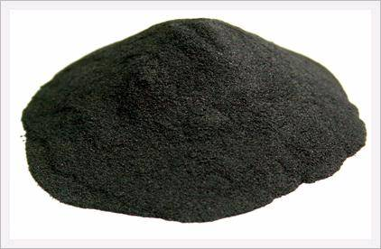
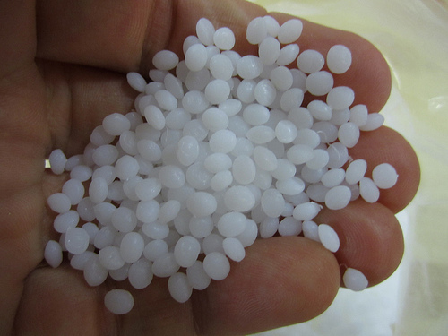

Materials
There are many different types of materials available 3D printers. They are generally coiled onto a spool, which the 3D printer can then heat up, melt, and then feed through a needle that builds the printed design.
Thermoplastics

Thermoplastics are plastics that have a higher melting point than regular plastic, so they are stronger and more durable. These can be used to mix and make many different colors, allowing for more customization.
Titanium Powder
Titanium powder is used to 3D print heavy industrial prototypes and parts out of Titanium. It requires very expensive 3D printers currently. The 3D printer first heats the powder up, and then uses a laser to blast the grains onto a flat surface.
Sugru
Sugru, or Formerol, is a patented multi-purpose, non-slumping brand of silicone rubber that resembles modeling clay. It can be used to print any shape entirely out of rubber, and make the object any color that is desired.